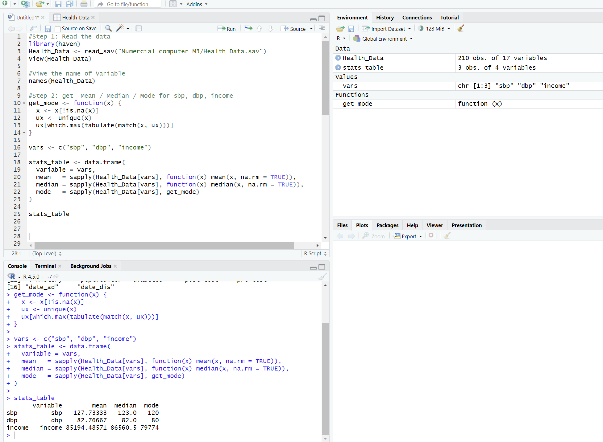
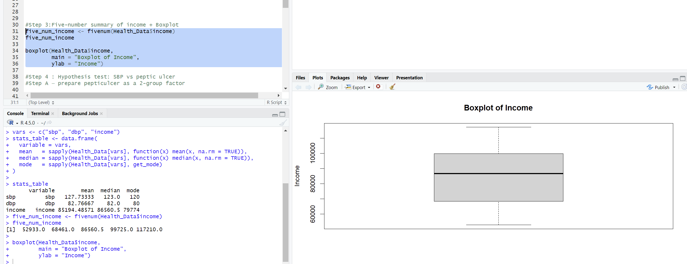
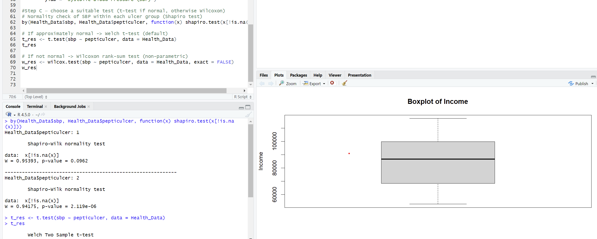
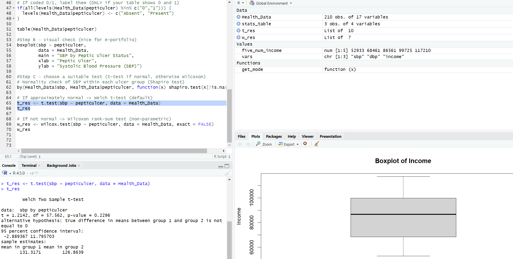
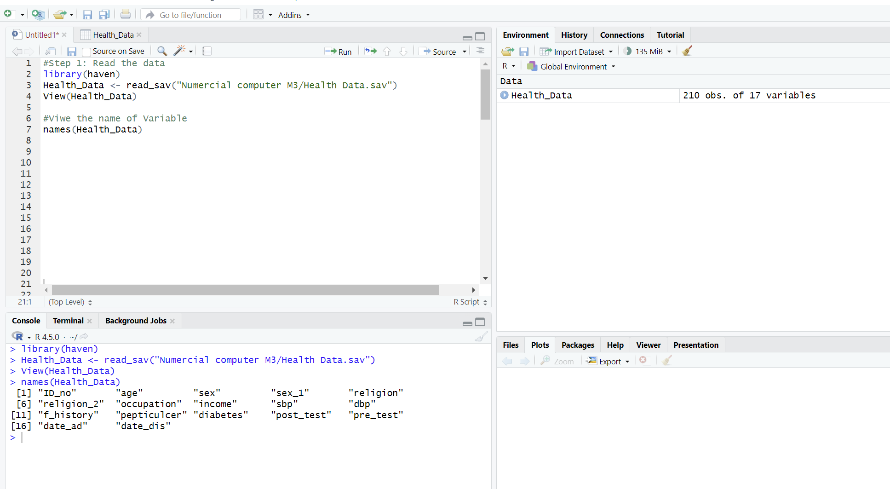

Unit 7: Data Activity 5
Deadline: End of Unit 7 | Type: Formative | Status: ✓ Complete
Health Data Analysis in R
For this activity, I analyzed the Health_Data dataset using R to explore relationships between various health indicators. The dataset contains 210 observations with 17 variables including blood pressure measurements, income data, and health conditions like peptic ulcers. I performed descriptive statistics, created visualizations, and ran hypothesis tests to understand the data better.

Learning Outcomes
Through this activity, I developed a systematic understanding of key statistical concepts including measures of central tendency, quartiles, and hypothesis testing. I also applied these methods to help analyze health data, which could support decision-making in a healthcare context. Working with R helped me understand how to translate statistical theory into practical analysis using real-world data.
Analysis and Findings
Task 1: Descriptive Statistics - Mean, Median, and Mode
I started by calculating the mean, median, and mode for three key variables: systolic blood pressure (SBP), diastolic blood pressure (DBP), and income. Here's what I found:
| Variable | Mean | Median | Mode |
|---|---|---|---|
| SBP | 127.73 | 123.0 | 120 |
| DBP | 82.77 | 82.0 | 80 |
| Income | 85,194.49 | 86,560.5 | 79,774 |
What this tells us:
The blood pressure values look pretty typical for adults. The systolic pressure average is around 127.7, which is slightly elevated but not too concerning. What's interesting is that the median (123) is a bit lower than the mean, which suggests there might be some people with higher blood pressure pulling the average up.
For diastolic pressure, the mean and median are very close (82.77 vs 82.0), which tells me the data is pretty evenly distributed without major outliers.
Income shows a similar pattern - the mean and median are quite close to each other (about 85,000 and 86,500 respectively). This indicates the income distribution is fairly balanced, though there are probably a few higher earners in the dataset.
Task 2: Five-Number Summary and Boxplot for Income
Next, I looked at the income variable more closely using a five-number summary:
- Minimum: 52,933
- First Quartile (Q1): 68,461
- Median: 86,560.5
- Third Quartile (Q3): 99,725
- Maximum: 117,210
What the boxplot showed:
The boxplot gave me a nice visual representation of the income distribution. I could see that the middle 50% of people in the dataset earn between about 68,000 and 100,000. The distribution has a slight right skew, meaning there are a few people earning higher incomes that stretch the upper end. However, there weren't any extreme outliers that would really distort the data, which is good.
The spread between Q1 and Q3 (the interquartile range) is around 31,000, which shows there's a reasonable amount of variation in income levels but nothing too extreme.
 Task 3: Hypothesis Test - Systolic Blood Pressure and Peptic Ulcer
The main question I wanted to answer was: Is there an association between systolic blood pressure and whether someone has a peptic ulcer or not?
Step 1: Checking the assumptions
Before jumping into the test, I checked whether the SBP data was normally distributed in each group (people with peptic ulcer vs. people without). I used the Shapiro-Wilk test for this:
- Group 1 (one peptic ulcer status): p-value = 0.0962 - This is approximately normal
- Group 2 (other peptic ulcer status): p-value = 0.000002 - This is definitely not normal
Since one group wasn't normally distributed, the safest approach was to use a non-parametric test (Wilcoxon rank-sum test) rather than relying only on the t-test.
Step 2: Running the tests
I ran both a Welch t-test and a Wilcoxon rank-sum test to be thorough:
Welch Two Sample t-test results:
- t-statistic = 1.214
- p-value = 0.2296
- Mean SBP in Group 1: 131.32
- Mean SBP in Group 2: 126.86
Wilcoxon rank-sum test results:
- p-value = 0.1434
What this means:
Both tests gave me p-values greater than 0.05 (the standard threshold for significance). The t-test gave p = 0.23 and the Wilcoxon test gave p = 0.14. This means there's no statistically significant difference in systolic blood pressure between people with and without peptic ulcers.
Even though Group 1 had a slightly higher average SBP (131 vs 127), this difference could easily be due to random chance rather than a real association. So based on this data, I can't say that having a peptic ulcer is related to having higher or lower blood pressure.
Complete R Code
Key Findings
- Blood Pressure Distribution: SBP and DBP averages are within common adult ranges, with SBP showing mild right skewness
- Income Distribution: Income data is fairly balanced with mean (85,194) and median (86,560) close together, indicating no extreme outliers
- Income Range: Middle 50% of individuals earn between 68,461 and 99,725, with an IQR of approximately 31,000
- Normality Testing: SBP data was not normally distributed in one peptic ulcer group, requiring non-parametric testing
- Hypothesis Test Result: No statistically significant association found between systolic blood pressure and peptic ulcer status (p = 0.14)
Reflection
This analysis gave me some good practice working with real health data in R. The descriptive statistics showed that the blood pressure and income values in the dataset are fairly typical and well-distributed. The boxplot was helpful for visualizing the income spread.
The hypothesis test was the most interesting part. Even though there was a small difference in average blood pressure between the two groups, it wasn't big enough to be statistically significant. This reinforces an important lesson: just because we see a difference in numbers doesn't mean it's meaningful - we need proper statistical tests to know if it's real or just random variation.
Overall, there's no evidence in this dataset that systolic blood pressure is associated with peptic ulcer status. Working through this activity helped me understand how to properly apply statistical tests in real-world scenarios and interpret the results in a meaningful way.